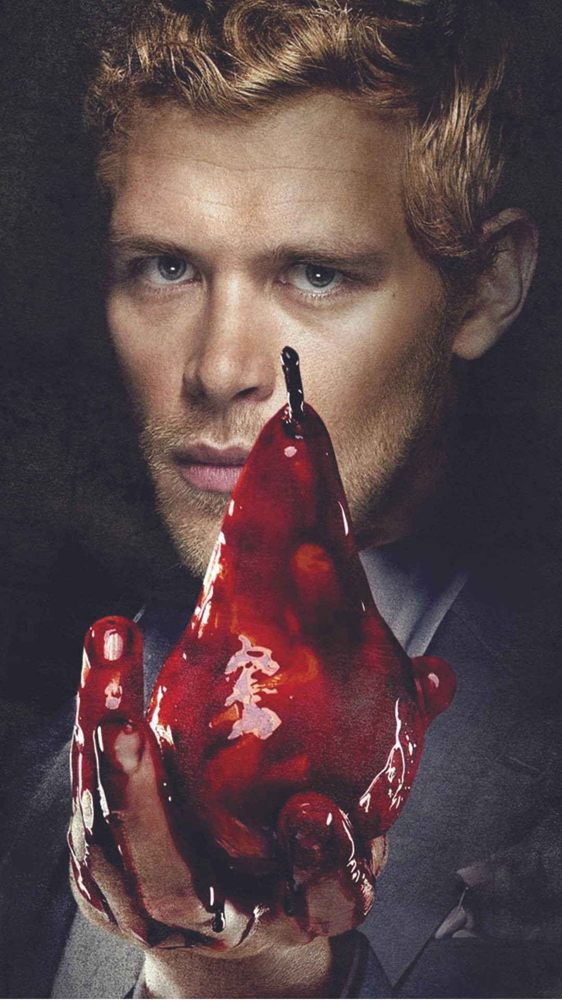

klaus Mikaelson:
Klaus Mikaelson é um dos personagens principais da série de televisão "The Originals". Ele é interpretado pelo ator Joseph Morgan. Klaus é um dos vampiros originais, sendo um híbrido de vampiro e lobisomem, o que o torna uma figura única e poderosa dentro do universo da série. A personalidade de Klaus é complexa e multifacetada. Ele é conhecido por ser manipulador, calculista e muitas vezes cruel, mas também demonstra vulnerabilidade e desejo de ser amado e aceito. Sua história é marcada por um profundo senso de solidão e rejeição, resultante da relação complicada com sua família e dos traumas de seu passado.